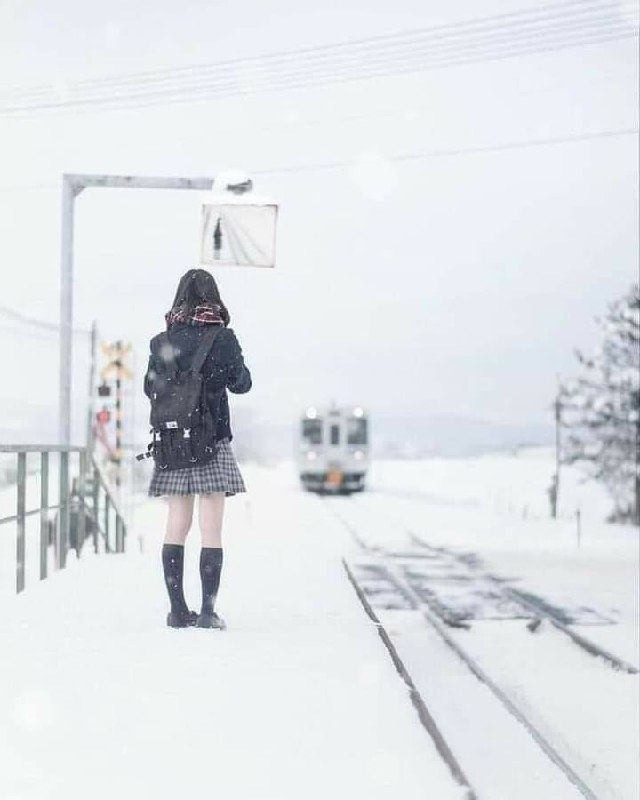

Yaponiyada temir yo'l stansiyasi bir yo'lovchi uchun uch yil ishlagan.

Yaponiyaning Xokkaydo orolidagi Kami-Shirataki bekatida bir necha yil davomida bir yo‘lovchi poyezd kutardi – o‘qishga boradigan maktab o‘quvchisi.
Poyezd o‘sha yerda kuniga ikki martagina to‘xtab, qizni olib ketish va maktab kuni tugagandan keyin olib kelish uchun to‘xtar edi.
2013-yilda Yaponiya temir yo‘l boshqarmasi Kami-Shirataki stansiyasini yopishga qaror qildi, chunki bu hududda yo‘lovchilar qatnovi yo‘q va yuk tashish kamaygan.
Ammo qiz har kuni ushbu poyezdda maktabga borishi kerakligi ma'lum bo'lgach, deyarli kimsasiz stantsiyani qoldirish qarori qilindi. Poezd har yili ta'mirlandi, qishda esa peron qordan tozalanardi.
Transport jadvali bevosita qizning maktab jadvaliga bog'liq edi.
Kami-Shirataki stansiyasi 2016-yilning martigacha ishlagan, shundan so‘ng qiz o‘rta maktabni bitirgani uchun yopilgan.
Yapon xalqi - buyuk millat!